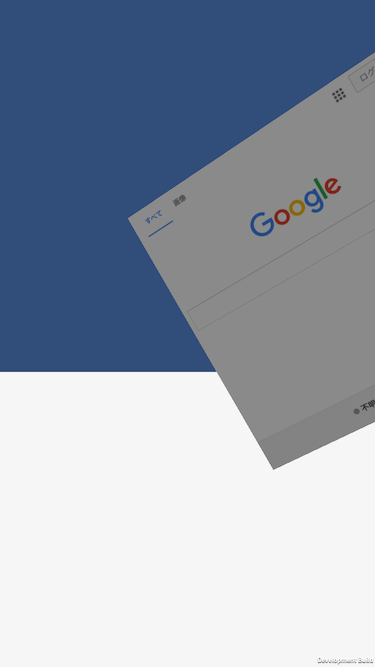

OpenSourceになってるCoherentUI1.xをとりあえずUnity5系で動かす
概要
2系はなんか欲しいものから違う気がしたので、オープンソースになってる1.xについて、view-touchインターフェースの部分だけ追おうと思った。
環境は
Mac OS X 10.11.15
iOS 9.3.2
Unity 5.4.0 f1
欲しいのは
・任意のViewをテクスチャに変換する機構
・テクスチャに対してタッチとかをイベントとして伝達する機構
の2つ。
結論から言うと動かせたんだけど「これじゃねーな」って感じがしたんでCoherentからは撤退する。
インストール
Unityに入れて動かす前に、pythonでビルドする必要がある。
Macで実行するとiOS版、Winで実行するとAndroid版が作られるみたいだ。
超過渡期の産物の匂い。
で、swigがpcreに依存してたりする。入ってねーっつーの。
### SWIG error output:
dyld: Library not loaded: /opt/local/lib/libpcre.1.dylib
Referenced from: /Users/tartetatin/Desktop/CoherentUIMobileOpenSource/Tools/DotNETWrapperGenerator/swig-2.0.9/swig-ios
Reason: image not found
brew install pcreで、適当に入れて動かしてみる。
で、下記行あたりでひっかかる。
subprocess.check_call(['/Applications/Xamarin Studio.app/Contents/MacOS/mdtool',
'build', projectPath, '-c:Release'])
Xamarin要るんかワレ。ほお、、、
で、本当に使っているのかなこれ？っていう。一応避けて(コメントアウトして)ビルドすると、Swig自体は動いたようで、ビルド成功してライブラリいっぱい吐いていた。
なるほど。スキップしちゃったんだけどこれmdtoolないと正しく動かない気がするな。
いろんな行の意味を追う
subprocess.check_call(
['python', 'Src/DotNet/MobileNet/ReplaceHandleRefForIOS.py', '--base', '.'])
参照の書き換えをやってるみたいな。C＃コードを直にいじってるのかな。
いろいろ置換してるっぽい。
subprocess.check_call(['/Applications/Xamarin Studio.app/Contents/MacOS/mdtool',
'build', projectPath, '-c:Release'])
ここでは、projectPathに置いてあるC#コードをビルドしてるっぽい。なんでだろって思ったけど置換まわりと関係がありそう。
なるほどな～～Xamarinのmdtool依存決定的っぽい。
Xamarin入れた上でmdtoolを使って複数のコードからdllが作れた。
そのdllにいろいろ含まれてて、それを使ってUnity側のビルドが通るとかを確認した。
で、このdllを作る工程を無視したい。
projectPathは、
Src/DotNet/MobileNet/CoherentUIMobileNetIOS.sln
なので、まあその中身を使えばいいのです。
実機で動かす
動かせると思うところまで来た。組み合わせ問題(ライブラリと.aオブジェクトの対応問題)が各アーキテクチャで出るので、ビルドするところも自動化しておかないとな～みたいな感じになる。
問題
__ZN13ScreenManager12SetupDisplayEi
Simulatorの場合、ビルド時にぜったいうまく動いてない感がある。
実行時にこいつがないって言われる。
Deviceの場合、そもそもビルドに失敗する。
なんの条件があるんだか、、、
Deviceでビルド通したほうがいい気がする。
デバッグビルドでDevice
「ビルドの度に元プロジェクトを消す」
ってやったらうまくいった。謎い。再現しよう。
サンプルについて
MobileInputは、viewをカメラ前に展開して、それがオブジェクトへのインプットを制御するっていう系統。
HTMLで作ったUIをカメラ前面に展開して、その状態をブラウザが保持、イベント伝達のオン/オフ切り替えと、実際にオン && ビュー上のオブジェとUIの重なってる領域をタップしたらオブジェが動く、とかをやってのけている。
カメラに張り付いているビューは、CoherentUIView.csをカメラインスタンスにくっつけたもの。こっちにはInput要素の扱いがあり、
Take All | Take None | Transparent の三択。
Take All だと吸収して貫通させない、 Transparentだと吸収せず通過させる、みたいな感じかな。
カメラに張り付くんじゃなくてオブジェクトに張り付いて欲しいんだが。
で、もう一個のサンプル MobileSurface.unity のほうでは、回転するペラ1のテクスチャにブラウザの画像を出していた。
MobuleSurfaceView.csを起点にして、テクスチャをサーフェスに貼るってことで動作してるみたいだ。
内部で使われてるのはMobileSurfaceView。
で、なんでかレンダラの参照が切れてて、それを指定しないといけない。動く組み合わせを見つけた。
このスクリプトに対して、
GUIにしたかったんだけど、表示されるだけでインプットを受け付けてくれない。ので、前出のCoherentUIViewが物体に貼り付けられればそれで良い感じ。
クラス
CoherentUIView.cs
と
MobileSurfaceView.cs
の二択になっていて、前者はそのままカメラを探して乗っ取るみたいなことをしてる。
結果
GUI表示しつつ適当なキューブ(回転する)の上にタッチ反応するWebView置けた。

依存分解
欲しいものは、
これ、依存を分解していくと、
・dll
・iOS用の.aファイルに依存(ここは結局独自のWebView実装を持ってないみたい。各プラットフォームのものを使っている?)
・mmファイル一個をPluginに置くことでUnityとWebViewをリンクさせてる
とかなんで、dllはまあC#のコードに分解できるとして、そっから先だな～～ .aファイルの負ってる役割の部分はこれこのままやるにはすごく辛い予感。
一応代替案がみつかったので動かしてみる
CEF3とそのMono用のラッパー。
https://github.com/cefsharp/CefSharp
https://bitbucket.org/xilium/xilium.cefglue/wiki/Home
ぶっちゃけChromium動かせるならそのほうが良い。
ポイントとタッチはどうやってるかわかったんで、まあ積めば良いよねっていう。
資料
http://klabgames.tech.blog.jp.klab.com/archives/1051659722.html
http://www.insaneunity.com/blog/2014/02/14/more-on-wtw-ui-cef3-integration/
ほか
https://github.com/jdierckx/UnityBerkeliumPlugin
https://github.com/sepehr-laal/UnityChromiumPlugin